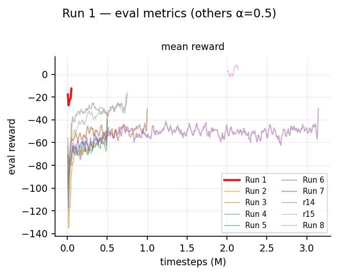
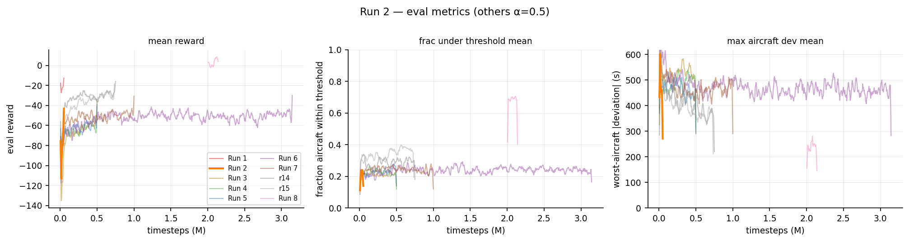
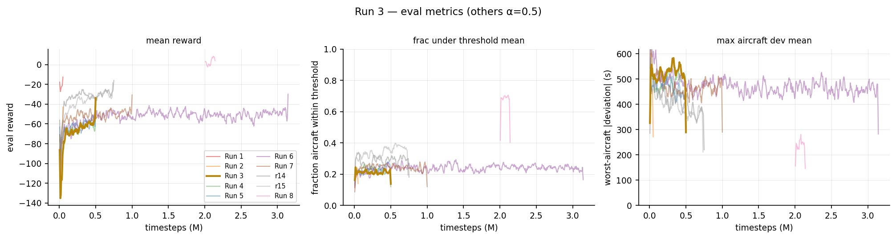
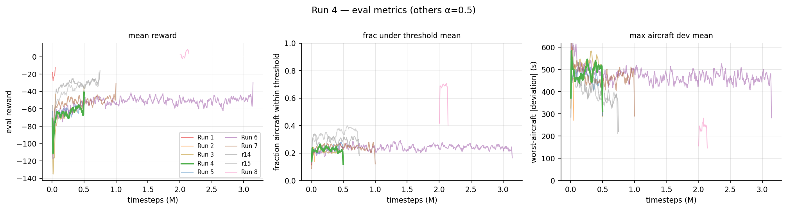
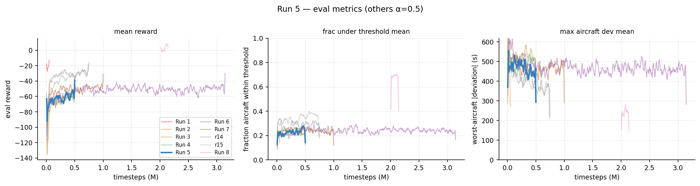
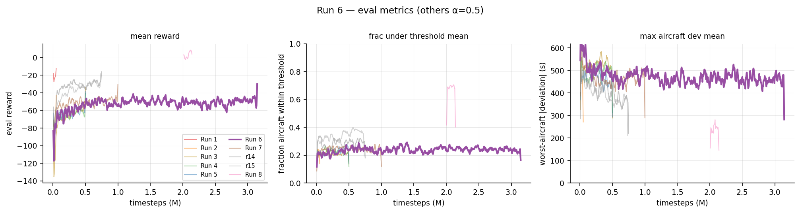
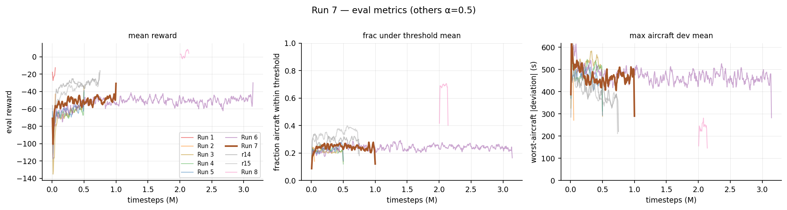
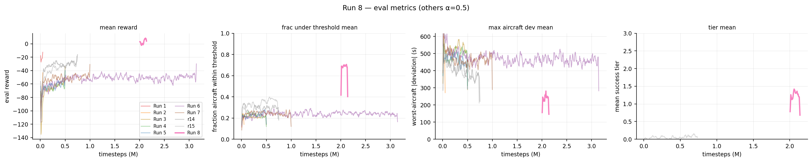
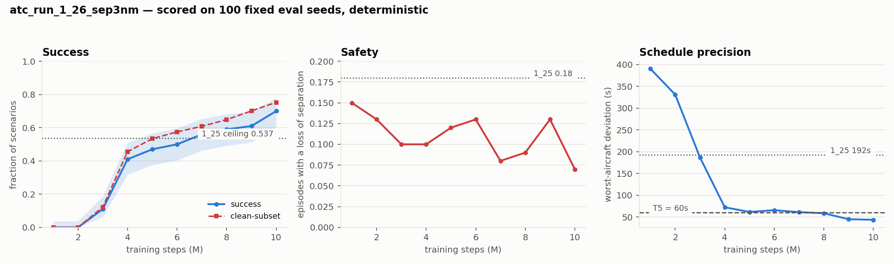
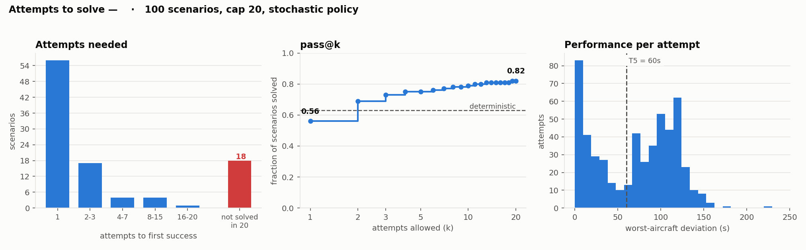

Experiment log¶
TL;DR
Run-by-run history. Runs 1–10 are narrated in detail below; runs 1_18–1_27 are summarised
together in one table, because only from that point are the numbers
comparable — everything there is scored by analysis/track_run.py on the same fixed
100-seed pool.
The headline: run 1_26 broke a deviation ceiling that twenty runs of reward and optimiser tuning had left intact, taking clean-subset success from 0.537 to 0.75 while halving losses of separation. Run 1_27 then tested the reduced 15-clearance set on top and did not improve on it — it learns markedly faster and converges slightly worse, with a confound that stops the comparison being decisive. Full analysis: 22 clearances vs 15.
Also here: changes outside the MDP — rendering, tooling, and seven infrastructure bugs, several of which had been silently wrong for many runs.
A chronological record of the PPO training runs on branch UM-lg, what
changed in each, and what we learned. Runs 1–5 logged to tb_logs/atc_run_1_N;
from run atc_run_1_11 onward each run is a self-contained directory under
experiments/atc_run_1_N/ (TensorBoard + CSV in tb/, checkpoints/, best/, a
snapshot/ of the source, plus run_meta.json and git_diff.patch for provenance).
The atc_run_1_N suffix increments each launch; the relevant ones are noted per run
(aborted/throwaway launches are skipped).
How to read this
Each run isolates a small set of changes from the previous one. The Finding line is the takeaway that motivated the next run.
Summary¶
| # | TB run | Steps | Headline change | eval reward | Binding blocker |
|---|---|---|---|---|---|
| 1 | atc_run_1_4 |
50k | SB3 baseline (original reward) | −35 → −20 | acts every step; deviation ≫ conflict; global obs 27% saturated |
| 2 | atc_run_1_5 |
50k | Reward/obs redesign | −176 → −66 | success gate unsatisfiable; deviation crowded out |
| 3 | atc_run_1_8 |
500k | Rebalance + relaxed gate | −156 → −60 (plateau ~150k) | deviation stuck; entropy collapse; value_loss huge |
| 4 | atc_run_1_9 |
500k | Simulator-only deviation + stability fixes | −136 → −51 | deviation still stuck; grads saturate clip (clip_frac≈1.0) |
| 5 | atc_run_1_10 |
500k | max_grad_norm 0.5 → 1.5 |
−123 → −45 | clip_frac unsaturated ✓; deviation ceiling persists |
| 6 | atc_run_1_12 |
5M† | Dense goal bonus + per-run experiment dirs | −151 → −33 | best yet, but late approx_kl→0.22 → regresses; deviation ceiling holds |
| 7 | atc_run_1_13 |
1M | + KL control (LR decay, n_epochs 5, target_kl 0.03) |
−117 → −37 | KL tamed ✓; peaks @425k then regresses to −60; all_under_threshold=0 |
| 8 | atc_run_1_16 |
→7.1M† | 5-tier success + autoregressive policy + per-scenario horizon + DOF action cost | 50% success peak (@5.7M), ~30% plateau | worst-aircraft dev → 99 s (ceiling broken); oscillates, not monotone |
| 9a | atc_run_1_16_a |
2→4M | 45 s control (Run 8 ckpt @2M continued) | ~40% peak, then drifts | reproduces Run 8 plateau/oscillation |
| 9b | atc_run_1_16_b |
2→4M | ½ interval 45→22 s + warm-restart LR (--initial-lr 1e-4) |
best per-AC dev (worst 99 s, tier1 0.98) but regresses to ~0–10% | 22 s transfer mid-run destabilising; inconclusive |
| 10 | atc_run_1_17 |
5.14M | fresh 22 s run (clean interval test) | −37.2 | 22 s lost; every run from 1_18 is back on 45 s |
† Run 6 targeted 5M but was stopped at ~3.14M. atc_run_1_11 (the launch that introduced
the goal bonus + experiment-dir scaffolding) aborted at ~2k steps and was relaunched as run 6.
success_rate = 0 for runs 1–7: no episode ever gets all aircraft within the old ±30 s gate.
Run 8 replaces that gate with a 5-tier system; extended in-place to ~7.1M it reaches a 50% success
peak (~30% plateau) with the worst-aircraft deviation down to ~99 s. Runs 9a/9b spin off its 2M
checkpoint to test the halved 22 s interval against a 45 s control; Run 10 (atc_run_1_17) is a
fresh 22 s run, which settled it — the halved interval lost and was reverted.
Run 1 — Baseline (atc_run_1_4, 50k)¶
First real run after the RLlib → sb3-contrib MaskablePPO migration, with the original reward.
Config: reward total = deviation + conflict only (action penalty & bonus
excluded); conflict = flat weight 1.0 within a 6-min lookahead then exponential
decay; deviation from the rollout MISS_TIMED_LANDING; Discrete(220) action space;
11 per-aircraft obs features; global features normalized to [0,1]; no terminal
success.
Results: ep_rew_mean −60.6 → −25.4; eval/mean_reward −35.5 → −19.5 (best) → −22;
value function recovered (EV ≈ 0.74); eval conflict −0.086 → −0.042, eval deviation
−0.62 → −0.50; eval do_nothing_frac 0.04 → 0.00; global obs saturation ~27%.
Finding: it learns to roughly halve both delay and conflict, but (a) it intervenes
every step, (b) deviation dominates conflict ~10:1 so safety is under-weighted,
(c) global obs are mis-scaled (pinned at the bound 27% of the time), and (d) there is
no terminal/success notion at all.

Run 2 — Reward/obs redesign (atc_run_1_5, 50k)¶
Implemented the target-policy design: imminent conflicts must dominate, schedule deviation is secondary, fewer actions are better.
Changes vs Run 1:
- Conflict: imminence-dominant ramp
w(ttc)=max(floor, ((T_near−ttc)/T_near)^p),weight 1→10,T_near=1200 s,p=2,floor=0.005; dedup pairs by earliest ttc. - Deviation: rollout deviation weighted linearly by landing proximity (baseline 0.2 → 1.0 at landing); scale 4000.
- Action penalty:
0.5 → 0.02per command and included intotal(). - Terminal success: all-landed AND each
|dev|≤30 sAND total≤ n·30 sAND no near-conflict ever + success bonus intotal(). - Obs: added per-aircraft
time_to_conflict(11 → 12 features); global renormalized[0,1] → [-1,1]; infringement horizon 6 min → full 48-min rollout.
Results: eval/mean_reward −176 → −65.9; eval conflict −2.66 → −1.04
(dominates and learns down); eval do_nothing_frac 0.16 → 0.52 (fewer actions ✓);
global saturation 27% → 17%; success_rate = 0. Sub-criteria: all_landed → 1.0,
but no_near_conflicts = 0 always, frac_under_30s 0.13 → 0.30, max_aircraft_dev
1060 → ~435 s.
Finding: imminence-dominant conflict + the "fewer actions" objective worked. But the "no near-conflict ever" success gate is unsatisfiable (one near-conflict anywhere fails it), and the conflict term so dominates that deviation barely gets optimized.

Run 3 — Rebalance + relaxed gate (atc_run_1_8, 500k)¶
First long run, addressing Run 2's two blockers.
Changes vs Run 2:
REWARD_SCALE_DEVIATION4000 → 2000 (give deviation real gradient).CONFLICT_TIME_EXPONENT2 → 3 (cheaper mid-range conflicts so deviation matters when conflicts aren't imminent; <5 min still dominates).- Success near-conflict gate relaxed from "ever" to "clear for the final 3 steps"
(
SUCCESS_NEAR_CONFLICT_CLEAR_STEPS=3); addedever_near_conflict/steps_since_near_conflictdiagnostics. total_timesteps50k → 500k.
Results: eval/mean_reward −156 → −60 but plateaus by ~150k; no_near_conflicts
→ ~1.0 (relaxed gate works ✓); all_landed → 1.0; conflict −4.2 → −1.3. But
frac_under_30s ≈ 0.2 and max_aircraft_dev ≈ 500 s stay flat; success_rate = 0.
Two pathologies surfaced: value_loss initialises ~7210 (returns reach ±390), and
entropy collapses 3.17 → 0.70 with approx_kl → 0.005 (the SB3 default ent_coef=0).
Finding: the conflict side is solved (all land, near-conflict gate satisfied), so the binding constraint is now schedule deviation — and it's stuck. The policy converges by ~150k and stops exploring (entropy collapse) → plateau.

Run 4 — Simulator-only deviation + stability fixes (atc_run_1_9, 500k)¶
Hygiene pass targeting Run 3's plateau + value-loss + observation consistency.
Changes vs Run 3:
- Removed
compute_dynamic_deviation: the observation's schedule deviation now comes only from the simulator rollout (MISS_TIMED_LANDING), matching the reward. ent_coef0.0 → 0.01 (combat entropy collapse).VecNormalize(norm_reward=True)around the train env (value targets ~O(1)).- Added pre-clip gradient-norm logging (
instr/grad/*).
Results (@120k): value_loss 7210 → ~0.03 (✓ returns_absmax 390 → ~3);
entropy retained better (entropy_norm 0.72 vs Run 3's 0.59 at the same step), approx_kl
~0.04 (actively updating, not frozen). But frac_under_30s ≈ 0.2 and
max_aircraft_dev ≈ 470 s are still flat, and eval/mean_reward hovers ~−65.
New signal: grad/clip_frac ≈ 0.95–1.0 — gradients saturate the max_grad_norm=0.5
clip on nearly every update.
Final (@500k): eval/mean_reward −136 → best −51 (@385k) → −63; clip_frac stayed
pinned at 0.85–1.0 the whole run; frac_under_30s peaked 0.30 then drifted to 0.21;
max_aircraft_dev floored ~400 s; success_rate = 0.
Finding: the value/entropy fixes are healthy hygiene but do not move the deviation ceiling — strong evidence the bottleneck is action granularity + a flat reward gradient near the goal, not exploration or value learning.

Run 5 — Larger grad clip (atc_run_1_10, 500k)¶
The change staged at the end of Run 4, run on its own to isolate the effect.
Change vs Run 4:
max_grad_norm0.5 → 1.5 (Run 4's gradients were saturating the clip, so every update was effectively halved). Nothing else changed.
Results: instr/grad/clip_frac 0.95–1.0 → 0.15–0.28 (peak 0.28) — gradients no
longer clipped on most updates ✓, and grad/norm_mean 1.5 → ~1.0. eval/mean_reward
−123 → best −45 (@350k) → −63, a clear lift over Run 4's −51 best. Conflict side stays
solved (no_near_conflicts 0.8 → 1.0, all_landed → 1.0). Value learning healthy
(value_loss 0.41 → 0.05, explained_variance −0.34 → 0.77). But the deviation metrics
barely budge: frac_under_30s 0.17 → 0.20 (peak 0.31), max_aircraft_dev floors ~388 s,
total_abs_dev ~1500 s; success_rate = 0.
Finding: the grad clip was a real handbrake — releasing it improved reward by ~6 pts — but it does not break the deviation ceiling. As predicted, this confirms the roadmap thesis: the bottleneck is action granularity + a flat reward gradient near the goal, not optimisation hygiene. Motivates a reward "carrot" near the goal (Run 6).

Run 6 — Dense goal bonus + experiment scaffolding (atc_run_1_12, 5M → stopped ~3.14M)¶
First attempt at the roadmap's "reward peaking" idea, plus a longer horizon. Also the first
run on the new self-contained experiments/ layout (the launch that introduced it,
atc_run_1_11, aborted at ~2k steps and was relaunched as this run).
Changes vs Run 5:
- Dense goal-closeness bonus (
actions/rewards.py::_goal_bonus): a positive, saturating termbonus = REWARD_GOAL_BONUS_MAX · exp(−total_abs_dev / REWARD_GOAL_BONUS_SCALE)(MAX=2.0,SCALE=400 s), added tototal(). It sharpens the gradient exactly as the predicted schedule deviation approaches zero — the only positive term besides the (never-firing) full-success bonus. total_timesteps500k → 5M (test whether the plateau is just under-training).- Per-run experiment directory + source snapshot + git provenance;
n_eval_episodes20 → 10.
Results: eval/mean_reward −151 → best −33 (@1.25M) — the best of any run — then
regresses to −45 by 3.14M. The goal term behaves as designed: reward_goal_mean
0.035 → 0.21 (peak 0.29) as deviation falls. Conflicts solved (no_near_conflicts → 1.0,
all_landed 0.5 → 1.0). Deviation improves slightly past the ceiling — frac_under_30s
peak 0.35, max_aircraft_dev floor 367 s, total_abs_dev floor 1433 s — the best
deviation numbers so far, but still far from "all within ±30 s" (success_rate = 0). The
regression has a clear cause: approx_kl climbs 0.015 → 0.11 (peak 0.22) and
clip_fraction 0.17 → 0.39 (peak 0.47) — the policy drifts too far per update in late
training and degrades after its peak.
Finding: the goal bonus + more steps give the best reward and the best deviation yet, so the carrot helps — but long-horizon training is unstable: KL/clip blow up after ~1.25M and the policy regresses. Need to cap policy drift before pushing the horizon further.

Run 7 — KL control (atc_run_1_13, 1M)¶
Targets Run 6's late-training instability with three standard PPO drift controls.
Changes vs Run 6:
- LR linear decay
3e-4 → 3e-5over training (main.py::linear_schedule) — smaller steps late, when KL was rising. n_epochs10 → 5 — fewer passes over each rollout ⇒ less policy drift per update.target_kl = 0.03— hard early-stop of the update onceapprox_klexceeds it.total_timesteps5M → 1M (KL controls vetted at a shorter horizon first).
Results: the KL controls work — approx_kl peaks 0.117 early then settles to 0.002
(vs Run 6's 0.22), clip_fraction 0.15 → 0.016 (vs 0.39). Value learning fine
(value_loss → 0.06, explained_variance → 0.74). But the eval curve still peaks early
and regresses: eval/mean_reward −117 → best −37 (@425k) → −60 by 1M — a worse peak
than Run 6's −33, and the same post-peak decline despite the tamed KL. Deviation ceiling
unbroken: frac_under_30s peak 0.30, max_aircraft_dev floor 361 s; crucially
all_under_threshold = 0 for the entire run — no eval episode ever gets every aircraft
within ±30 s, which is exactly why success_rate stays 0.
Finding: capping KL removes the instability mechanism but not the regression or the
deviation ceiling — and the aggressive LR decay may itself cap late improvement (best at 425k,
then nothing). Tellingly, all_under_threshold = 0 everywhere: the success gate is now bound
purely by per-aircraft deviation, not conflicts or optimisation. Across Runs 5–7 the
deviation floor (frac_under_30s ≈ 0.3, worst aircraft ≈ 360–390 s) is essentially fixed —
strong, repeated evidence that the dense bonus and tuning have hit their limit and the next
lever must be action granularity (finer/continuous control) per the roadmap.

Run 8 — 5-tier success + autoregressive policy (atc_run_1_16, 1.91M†)¶
Bundles four simultaneous changes motivated by the Runs 5–7 deviation ceiling, plus the switch to finer-grained action control.
† Interrupted at 1.91 M / 2.0 M steps. Resume/spinoff in progress; see training docs.
Changes vs Run 7:
- 5-tier graduated success bonus — replaces the all-or-nothing ±5.0 terminal. All tiers
require the relaxed near-conflict gate (conflicts clear for ≥ 3 final steps):
- Tier 1 (+1.5): ≥ 50% of aircraft within ±120 s.
- Tier 2 (+3.0): ≥ 80% within ±100 s.
- Tier 3 (+6.0): ≥ 80% within ±70 s and
max_aircraft_dev< 200 s. - Tier 4 (+9.0): ≥ 80% within ±60 s and
max_aircraft_dev< 120 s. - Tier 5 (+13.0): all landed and every aircraft within ±60 s ("solved").
Tiers 3 and 4 add an explicit
max_devcap to provide terminal gradient signal for the worst-case aircraft — the binding constraint observed in Runs 1–7. A hard violation applies−15.0(REWARD_VIOLATION_PENALTY> T5 bonus) and suppresses any tier. Highest tier wins; no stacking.
- Extended goal bonus —
_goal_bonusnow includes bothexp(−total_dev/400)andexp(−max_dev/200), so the per-step dense signal also targets the worst aircraft. - Autoregressive policy (
ATCAutoregressivePolicy) on vanillaPPO— aircraft head → clearance head conditioned on the sampled aircraft index. FinerMultiDiscrete([10, 22])action space vs the old flatDiscrete(220).Config.USE_AUTOREGRESSIVE_ACTIONS = True. - Per-scenario episode horizon (
Config.USE_PER_SCENARIO_HORIZON = True) — each episode is sized to the scenario's latest arrival ETA + margin rather than a fixed 64-step cap, preventing the structural timeouts that affected all eval seeds. - DOF action cost (
REWARD_ACTION_DOF_K = 3.0) — acting late (few remaining waypoints) costs more than acting early, discouraging last-moment interventions.
Results (extended in-place to ~7.1 M steps): success_rate rises from 0% → ~30% between
1 M and 2 M and, with continued training, reaches a best of 50% (@5.7 M), averaging ~30% over the
last 1 M — the first non-zero success rate across all runs and a clear validation of the tiered
approach. Critically, the deviation ceiling is broken: the worst-aircraft deviation falls to
~99 s (@6.4 M) and total absolute deviation to ~305 s, versus the ~360–390 s worst-aircraft /
~1430 s total floor that held across Runs 1–7; tier-1/tier-2 fractions reach 0.98 / 0.96. The
conflict side stays solved (all_landed and no_near_conflicts ≈ 1.0). Training is not monotone,
though — success_rate oscillates ~0.2–0.5 rather than climbing steadily.
Finding: the tiered terminal bonus breaks both the 0%-success and the deviation ceiling —
the max_dev caps at Tiers 3–4 give the agent explicit terminal feedback about the worst-case
aircraft, not just the mean. What remains is stability: past ~3 M the policy oscillates instead
of converging. This motivates the finer-temporal-control experiment (Run 9) and a clean longer
run (Run 10).

Run 9 — Finer temporal control: 22 s interval (atc_run_1_16_a 45 s control vs atc_run_1_16_b 22 s)¶
Motivation. On the hardest scenarios the binding limitation is structural to the action interface: only one aircraft can be commanded per env step. At a 45 s interval the agent runs out of decision points to issue all the clearances needed to interleave control across several converging aircraft, so it cannot both resolve conflicts and trim every landing time. Rather than widen the per-step choice to multiple aircraft, this run attacks the orthogonal temporal granularity — the agent simply gets to act more often. (Item 1 on the roadmap, by contrast, attacks action magnitude granularity.)
Design (A/B from one checkpoint). Both arms spin off Run 8's 2 M checkpoint and add ~2 M steps (→4 M), differing only in the simulation interval:
atc_run_1_16_a— 45 s control: continues unchanged (resume from the checkpoint LR).atc_run_1_16_b— 22 s:TIME_BETWEEN_ACTIONS45 → 22 s with every step-count duration doubled in tandem (EPISODE_STEPS64→128,MAX_EPISODE_STEPS130→260,SCENARIO_INITIAL_CONFLICT_FREE_STEPS6→12,SUCCESS_NEAR_CONFLICT_CLEAR_STEPS3→6, …) so wall-clock semantics are preserved. Warm-restarted with--initial-lr 1e-4(decaying to 1e-5).
Results (2 M → 4 M):
| Metric (best over the run) | 45 s control (16_a) |
22 s (16_b) |
|---|---|---|
success_rate |
0.40 @2.7 M | 0.30 @2.1 M |
| worst-aircraft dev | 113 s @2.9 M | 99 s @3.8 M |
| total abs dev | 363 s | 333 s |
| frac ≤ tier1 / tier2 | 0.95 / 0.91 | 0.98 / 0.94 |
success_rate (final, oscillating) |
~0.3 | ~0.0–0.1 (collapsed) |
The 22 s arm transiently reaches the best per-aircraft deviation numbers of any run (worst
aircraft 99 s, tier-1 0.98) — weak evidence that the extra decision points help the tail aircraft.
But it is also less stable: re-entering a 45 s-trained policy into the 22 s regime (with the LR
warm restart) is disruptive, and 16_b regresses harder than the 45 s control — late
success_rate collapses to ~0–10 %, tier_mean drifts to 1.5–2.5, and total deviation climbs to
600–870 s. The 45 s control just reproduces Run 8's plateau/oscillation (~40 % peak, then drift).
Finding: inconclusive, leaning negative for the warm-restart path. Transferring a 45 s-trained policy into 22 s mid-run conflates a regime change with the interval benefit and destabilises training. The per-aircraft deviation gain is real but did not hold. The interval change needs a clean from-scratch test before any verdict — see Run 10.
Run 10 — Fresh 22 s run (atc_run_1_17, 5.14 M)¶
A fresh, from-scratch run on the 22 s regime (no warm restart), to give a clean read on finer temporal control after Run 9's warm-restart result was confounded by the mid-run regime change. Every step-count constant encoding an absolute duration was doubled in tandem.
Results. Ran to 5.14 M steps. Final eval/mean_reward −37.2, against Run 8's +3.5 on
the same 45 s-trained lineage. The doubled per-episode env-steps also made it the most
compute-heavy run to that date, for no return.
Finding — the 22 s interval was tested cleanly and lost. It was reverted; every run from
1_18 onward is back on 45 s, and TIME_BETWEEN_ACTIONS has not moved since. Acting twice as
often did not buy finer control, it just doubled the credit-assignment horizon. The reference
values on MDP and Training are the 45 s ones.
Runs 1_18 – 1_27 (summary)¶
The per-run narrative above stops at 1_17. This section covers what happened since, scored
consistently: every figure below is analysis/track_run.py / score_checkpoints.py on the
same fixed 100-seed pool, deterministic. In-training success_rate is a 5-episode rolling
window and is not comparable — it read 1.00 for 1_22 whose true rate was 0.38.
| run | success | separation | clean-subset | tier | max dev | note |
|---|---|---|---|---|---|---|
1_22 |
0.38 | 0.17 | 0.458 | 3.25 | 179 s | best of the pre-1_26 era |
1_24_pms |
— | — | — | — | — | BGY point-merge; near the do-nothing floor, 0/100 success |
1_25 |
0.44 | 0.18 | 0.537 | 3.20 | 192 s | realised-only conflict gate; a semantics fix, not a capability change |
1_26 |
0.70 | 0.07 | 0.753 | 4.38 | 43.4 s | severity redesign + exponential decay + log deviation observable |
1_27 |
0.64 | 0.10 | 0.711 | 4.01 | 87.3 s | clearance set v2 — 15 actions; LR schedule confounded |
1_27a |
0.64 | 0.10 | 0.711 | 4.04 | 76.5 s | same, resumed on the correct cosine — the confound removed |
1_26 and 1_27 are quoted at their 10M step checkpoints; the earlier rows are best
checkpoints. 1_26's final_model scores 0.65 and its best_model 0.66, so its 10M checkpoint
is not a lucky pick; 1_27's best_model scores 0.62 and its final_model 0.58.
Both checkpoints were scored twice, and the spread is the error bar
An independent same-day re-score of the same two checkpoints on the same pool returned
0.69 / 41.3 s for 1_26 and 0.60 / 92.3 s for 1_27
(analysis/2026-08-17_1_2{6,7}_at10M_perseed.csv). The observation frame is drawn from a
global RNG that reset() never reseeds, so repeated scoring of one checkpoint moves by a few
seeds. Both draws agree on the conclusion: the success gap (0.06 and 0.09) is inside the
≈0.13 significance threshold, and the deviation gap (44 s and 51 s) is not.

Clean-subset success — success / (1 − separation), the success rate on episodes with no
loss of separation — had sat near 53.7% across twenty runs of reward and optimiser tuning.
Run 1_26 moved it to 0.714 while simultaneously halving the separation rate, so it was
not bought by over-separating. The 10M checkpoint scores 0.70 success / 0.07 separation;
final_model 0.65 and best_model 0.66 sit within noise of it (SE ≈ 0.047).
What 1_26 changed¶
Three coupled changes, described in full in the MDP page and reward page:
- Severity geometry — a convex 3–5 NM band replacing 10/0 NM, making
severity == 1.0mean an actual loss of separation and freeing legal spacing from a continuous tax that had been absorbing 98.8% of the conflict penalty. - Termination on a realised bust, with a horizon-aware penalty.
- Log-scaled deviation observable, which is the most likely cause of the
max_devcollapse from 192 s to 45 s.
Not attributed
Those three shipped together, so the result attributes to the bundle, not to a part. The
USE_LOG_DEVIATION_OBS = False ablation that would have settled it was never run, and
1_27 has since moved past that baseline.
Where the residual failures are¶
Sampling each scenario stochastically until solved (analysis/attempts_to_solve.py, 100 seeds,
cap 20) separates capability from reliability:
- deterministic 0.63, pass@1 0.56, pass@20 0.82 — so ~19 points is reliability, recoverable at inference by best-of-n or a shield with no retraining.
- Of the 18 never solved: 12 are precision-bound (under 20% of attempts bust, tier 4 on 73% of attempts, tier 5 never) and 6 are safety-bound (bust on 70–100% of attempts). Rule and seed lists: test log.

All 12 precision-bound seeds end with their worst aircraft late, median +107 s. Speed
authority is roughly 19× weaker upward than downward, so this motivated SHORTEN_TROMBONE in
the v2 clearance set — on those same
seeds the agent lengthens the trombone in 12/12 episodes and could never take it back.
Run 1_27 — reduced clearance set¶
Changes. Only the action side, on top of 1_26: 22 clearances → 15, eight turn variants
collapsed to two, four trombone levels to a reversible ±1 pair, SPEED_UP_LARGE dropped, MEDIUM
speed steps and SHORTEN_TROMBONE added. Full set in MDP. Riding along,
none of them MDP: eval every 25k instead of 5k, checkpoints every 25k instead of 10k, and a
1.93× faster observation build (bit-identical output). Completed at 10M on 12 Aug.
Results. Success 0.64 against 1_26's 0.70 — a tie at this sample size — and
worst-aircraft deviation 87.3 s against 43.4 s, which is not. It leads 1_26 on success at
every checkpoint through 7M (0.25 at 2M where 1_26 is at 0.00), draws level at 8M, then flattens.
SHORTEN_TROMBONE is issued 5 times in 5 162 clearances, and 1_27 solves 0 of 1_26's 12
precision-bound seeds. Safety-bound failures halved, 6 → 3.

Finding. A smaller action space is much easier to explore and, here, less able to finish the
job. The run crashed at 4.98M and resumed onto a linear LR decay instead of continuing the
cosine, training its whole second half up to 1.6× hotter — which would leave the same fingerprint
on convergence. That confound was removed by 1_27a (below) and did not account for the
result. The finding that never depended on it: giving the agent a corrective action is not the
same as giving it a reason to learn one.
Full analysis: 22 clearances vs 15. Raw tests: test log, 17 Aug.
Run 1_27a — the same run with the learning rate fixed¶
Changes. Nothing in the MDP. Resumes 1_27 from its own 4 975 000-step checkpoint and runs
the remaining 5.025M steps on 1_26's cosine rather than the linear resume decay
(main.py --resume-schedule cosine). The cosine at that point reconstructs the checkpoint's own
learning rate to within 0.06%, so it continues the curve instead of starting a new one.
Results. Success 0.64 — identical to 1_27, so the schedule moved it not at all.
Worst-aircraft deviation 76.5 s against 1_27's 87.3 s and 1_26's 43.4 s: 10.8 s of a
43.9 s gap. Restricted to clean episodes the corrected run is 92.8 s against 89.8 s, i.e. no
better. Attempts, censored counts, precision-bound split, cap-25 solve rate and
SHORTEN_TROMBONE usage all reproduce 1_27 almost exactly.

Finding. The learning-rate schedule was not the explanation. The 22-clearance set's
advantage in schedule precision is a property of the action set, and the SHORTEN_TROMBONE
result now rests on two independent runs with different optimiser schedules. Details:
test log, 18 Aug.
Changes outside the MDP¶
Work that does not change what the agent optimises but does change what you can see or trust.
Rendering (render_policy.py, utils/render_utils.py)¶
- The 3D approach view drew its airport marker at the origin while MXP is at (−23.2, 10.2), so
descents converged on empty space 25 nm away.
env.render()had been reverted to an older call site and was passing none ofapproach_xy,tier,tier_metrics,action_counts. - Predicted trajectories per aircraft on both views, sampled from the same rollout the deviation reward is scored against.
- The info panel gained column headers and a conflict readout — previously near-permanently blank, because it ranked pairs by charged severity, which is zero beyond 5 NM.
- The tier health bar is built from
Configrather than a hardcoded six-cell ladder that could never light its last cell. --seednow actually pins the scenario. It previously only seeded the RNGs while_select_scenario_seedwalked the eval pool, so filenames named scenarios that were never generated.--attempts Nretries a scenario until solved and renders the winning attempt;--solutions-jsonexports the played action sequences.
Instrumentation and tooling¶
analysis/track_run.py— scores checkpoints on the fixed 100-seed pool as a run produces them, so a trustworthy progress curve exists without re-deriving it afterwards.analysis/attempts_to_solve.py— separates capability from reliability by sampling until solved.analysis/ordering_sensitivity.py— established that aircraft slot ordering is inert: 100% first-action agreement and byte-identical outcomes across 8 orderings on 25 scenarios.analysis/action_set_selftest.py— exercises the stack under both clearance sets.analysis/make_doc_plots.py— regenerates the figures on this site.
Bugs found and fixed¶
| what | impact |
|---|---|
end_reason/* logged via record_mean(key, 1.0) only when it fired |
every series averaged to exactly 1.0; separation rate unreadable for any run before 1_27 |
deepcopy of the route store raises TypeError on PyO3 RoutePoint, swallowed by a bare except |
the eval shield silently dropped every trombone clearance from its candidate set since f9ecc24 |
get_latest_run_id ignores suffixed directories |
--run-suffix runs never advanced the counter; 1_27 first launched as atc_run_1_25_sep3nm |
Config.USE_GPU never passed to SB3 |
every run went to cuda regardless of the flag |
| snapshots captured a curated file list | once the action modules became facades, a run's snapshot contained no clearance definitions; now whole packages |
reset(seed=…) does not pin the scenario in eval mode |
score_checkpoints.py was correct only by iterating the pool in the same order |
observation build spent 42% of its time in np.clip on scalars |
1.93× slower than necessary, bit-identical after the fix |